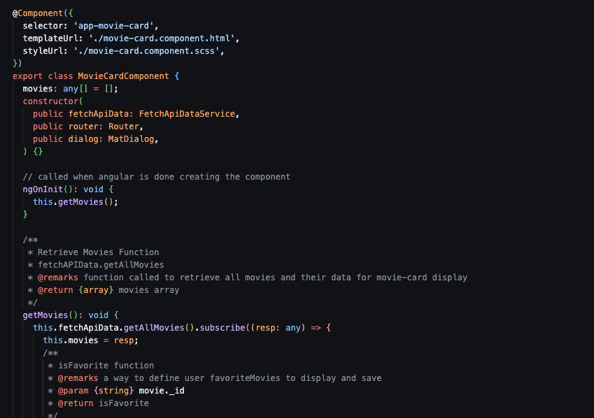

myFlix App, Angular
Github LinkThe Goal:
To re-build my react movie application using Angular and connecting to the movie API that I built previously.
The Purpose:
Career Foundry, Full-Stack Immersion, Achievement 6
To build my first Angular application, and give myself experience using TypeScript, data bindings, and interpolation while I build an application I am already familiar with
The Tools:
- Angular
- TypeScript
- Node.js
- TypeDoc
- AngularMaterial
The Process:
Using Angular to rebuild the myFlix application I had built using React. This allowed me to explore a different framework in an application I already knew a lot about. Angular provides a very different framework, especially in how you pass information between components. I found data bindings to be confusing at the start but once I got the hang of it, I enjoyed the ease with which I could move data through an application. I also appreciated the structure used to organize files, I am the kind of person who loves when something has a specific home or place, Angular format suits this and it feels very easy to find any piece of code that you may be looking for.
Again, I learned the lesson of high quality documentation being so important after having to return to my own API. I also used TypeDoc to format my documentation for this application, implementing clear and organized comments so that typeDoc could function.
The Outcome:
Initially having to push through the adjustment of switching frameworks from React to Angular was the main hurdle in building this application. Once I found the rhythm of working with Angular everything felt smooth. I would love to come back to this application and add more styling and maybe a "movie details" page where you can explore movie data not through modals.